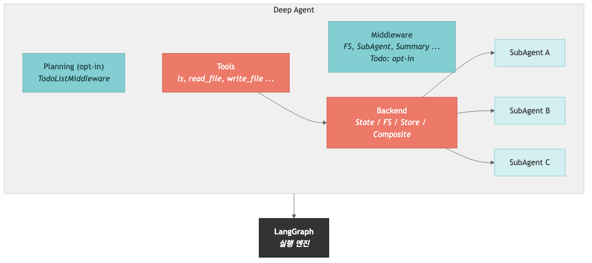

AI 에이전트 개발
오리엔테이션
세 프레임워크가 어떻게 한 계열로 쌓이는지, 이 과정이 어디로 향하는지 먼저 살펴봅니다.
세 프레임워크는 경쟁이 아니라 한 계열
위로 갈수록 더 많은 것이 내장되고, 각 층은 아래 층을 그대로 사용합니다
과정 로드맵 — 노트북 하나씩 쌓아 올립니다
각 단계는 앞 단계를 이어받고, 마지막에는 직접 만든 에이전트가 손에 남습니다
LLM
메시지·스트리밍
AGENT
LangChain
GRAPH
LangGraph
DEEP
올인원
BUILD
미니 프로젝트
에이전트의 재료인 LLM을 메시지 단위로 다룹니다.
도구를 붙여 스스로 판단하는 에이전트를 만듭니다.
흐름을 직접 그려 정밀하게 제어합니다.
파일·서브에이전트가 붙은 하네스를 쓰고, 긴 작업에는 계획 미들웨어를 추가합니다.
검색과 요약 리서치 에이전트로 종합합니다.
환경 설정에서 출발해 LLM · LangChain · 메모리 · LangGraph · Deep Agents · 비교를 거쳐 미니 프로젝트로 마무리합니다.
이 과정에서 직접 만드는 것
질문을 주면 웹을 검색하고 한국어로 요약하는 리서치 에이전트를, 마지막 장에서 직접 완성합니다.
입문이지만 개념만 훑고 끝나지 않습니다. 실제로 동작하는 에이전트 한 개가 남습니다. Deep Agents + Tavily
환경 설정
키를 넣고 모델을 띄워 첫 응답을 받아 봅니다. 여기서 만든 환경을 과정 내내 그대로 재사용합니다.
에이전트란 무엇인가
에이전트는 LLM이 어떤 도구를 어떤 순서로 쓸지 스스로 판단하고, 실행하고, 결과를 관찰해 작업이 끝날 때까지 반복하는 시스템입니다.
단발 프롬프트-응답과 다른 까닭은, 모델이 행동을 직접 추론(reason)하고 실행(act)하기 때문입니다.
키 발급과 환경 변수 로드
필수: OPENAI_API_KEY
LLM 호출에 쓰입니다. platform.openai.com에서 발급합니다.
선택: TAVILY_API_KEY
웹 검색 도구에 쓰이며, 마지막 미니 프로젝트에서만 필요합니다. tavily.com.
.env로 관리합니다
키는 .env에 두고 .gitignore에 포함해 절대 커밋하지 않습니다.
OPENAI_API_KEY=sk-... TAVILY_API_KEY=tvly-... # 선택
from dotenv import load_dotenv import os load_dotenv(override=True) assert os.environ.get("OPENAI_API_KEY"), \ "OPENAI_API_KEY가 설정되지 않았습니다!"
ChatModel로 LLM을 정의합니다
ChatOpenAI
OpenAI 모델을 감싸는 LangChain 챗 모델 클래스입니다. temperature·max_retries 같은 인자를 직접 제어합니다.
이 model을 재사용합니다
여기서 만든 객체를 이후 모든 노트북에서 그대로 가져다 씁니다.
init_chat_model
이름에서 프로바이더를 자동 감지하는 팩토리입니다. 런타임에 모델을 바꿔 끼울 때 편리합니다.
from langchain_openai import ChatOpenAI model = ChatOpenAI(model="gpt-4.1") response = model.invoke("안녕하세요!") print(response.content)
from langchain.chat_models import init_chat_model # 이름만으로 감지 (또는 "openai:gpt-4.1") model = init_chat_model("gpt-4.1")
model.invoke()는 문자열이 아니라 AIMessage를 돌려줍니다
응답 객체 안에는 텍스트뿐 아니라 토큰 사용량과 메타데이터가 함께 담겨 있습니다
- AIMessage의 주요 속성입니다
- –.content — 모델이 생성한 텍스트 응답입니다
- –.usage_metadata — 토큰 수입니다 (input / output / total)
- –.response_metadata — 모델 버전·종료 사유 같은 프로바이더 메타입니다
- –.tool_calls — 모델이 요청한 도구 호출이 있을 때 담깁니다
- 모델 초기화는 두 가지 방식이 있습니다
- –ChatOpenAI(...) — 프로바이더 클래스를 직접 씁니다. temperature·max_retries 같은 고유 인자를 제어할 수 있어 이 과정에서 사용합니다
- –init_chat_model("...") — 이름에서 프로바이더를 자동 감지하므로 런타임 전환에 유용합니다
관측성 — 어디서 실패했고 토큰은 얼마나 썼나
에이전트는 여러 단계를 거치므로 트레이싱이 사실상 필수입니다
| 도구 | 연동 | 특징 |
|---|---|---|
| LangSmith | LANGSMITH_TRACING=true | LangChain 1차 지원, 코드 수정 없이 자동 계측 |
| Langfuse | CallbackHandler를 config로 | 오픈소스·셀프호스트, 비용·평가·프롬프트 관리 |
| OpenTelemetry | OTel 콜렉터로 라우팅 | 벤더 중립 — Datadog·Grafana·Jaeger로 전송 |
| Traceloop | OpenLLMetry SDK | OpenTelemetry 기반 자동 계측, 한 줄 초기화 |
| Arize Phoenix | 로컬·셀프호스트 | 오픈소스, 트레이싱과 평가를 함께 |
LLM 기초
현대 LLM은 메시지 시퀀스를 입력으로 받습니다. 이 메시지 시스템 위에 모든 에이전트가 세워집니다.
LangChain 메시지 타입 — System · Human · AI · Tool
LLM은 문자열이 아니라 메시지 리스트를 입력으로 받습니다
| 역할 | 클래스 | 설명 |
|---|---|---|
| system | SystemMessage | 행동 지침·페르소나·톤·규칙을 정해 초기 동작을 결정합니다 |
| human | HumanMessage | 사용자 입력입니다. 텍스트뿐 아니라 이미지·오디오·문서도 다룹니다 |
| ai | AIMessage | 모델 응답입니다. tool_calls·usage_metadata가 함께 담깁니다 |
| tool | ToolMessage | 도구 실행 결과를 모델에 돌려줍니다. tool_call_id로 매칭하며 artifact도 담을 수 있습니다 |
| 스트림 | AIMessageChunk | 스트리밍 중 생성되는 조각으로, + 연산으로 합쳐져 최종 AIMessage가 됩니다 |
시스템 메시지가 모델의 성격을 결정합니다
가장 강력한 다이얼입니다
같은 질문이라도 SystemMessage를 바꾸면 톤과 관점이 완전히 달라집니다. 프롬프트 엔지니어링의 핵심입니다.
import 경로
LangChain v1에서는 langchain.messages에서 가져옵니다.
형식은 세 가지입니다
문자열·메시지 객체·딕셔너리 모두 같은 결과를 냅니다. 딕셔너리는 OpenAI 코드를 옮겨올 때 편리합니다.
from langchain.messages import SystemMessage, HumanMessage messages = [ SystemMessage(content="당신은 유용한 어시스턴트입니다."), HumanMessage(content="Python이란 무엇인가요?"), ] response = model.invoke(messages) # 딕셔너리 형식 — 결과는 동일 model.invoke([ {"role": "system", "content": "한국어로 답하세요."}, {"role": "user", "content": "LangChain이란?"}, ])
호출은 세 가지 — invoke · stream · batch
invoke
동기 호출로, 전체 응답을 한 번에 받습니다.
stream
토큰이 생성되는 대로 AIMessageChunk를 순차로 받습니다. 단일 요청의 응답성을 높여 줍니다.
batch
여러 입력을 병렬로 처리합니다. 루프로 invoke를 반복할 때보다 훨씬 빠릅니다.
# 스트리밍 — 토큰 단위 실시간 출력 for chunk in model.stream("우주에 대한 사실 2가지?"): print(chunk.content, end="", flush=True) # 배치 — 여러 질문을 병렬로 model.batch(["2+2는?", "3*5는?"])
첫 에이전트 — LangChain
create_agent() 한 줄로 ReAct 루프를 도는 에이전트를 만듭니다. 도구는 @tool로 정의합니다.
ReAct 루프 — 생각하고 행동하기를 반복합니다
모델이 도구 호출이 필요한지 판단하고, 실행 결과를 다시 받아 이어 갑니다

판단
사용자 입력을 받아, 도구를 호출할지 바로 답할지 모델이 추론합니다.
도구 실행
필요하면 tool_calls를 프레임워크가 실행해 ToolMessage를 만듭니다.
관찰·반복
결과를 보고 다시 판단하며, 텍스트로 답하거나 최대 횟수에 도달할 때까지 반복합니다.
도구 만들기 — docstring이 가장 중요합니다
@tool 데코레이터
일반 함수를 에이전트 도구로 바꿔 줍니다. langchain.tools에서 가져옵니다.
타입 힌트가 스키마입니다
인자 타입이 입력 스키마를 정의합니다. Literal로 허용 값을 제한합니다.
docstring이 설명입니다
모델은 docstring을 읽고 언제 이 도구를 쓸지 판단합니다. 동료에게 설명하듯 명확히 적습니다.
from langchain.tools import tool @tool def add(a: int, b: int) -> int: """두 수를 더합니다.""" return a + b @tool def multiply(a: int, b: int) -> int: """두 수를 곱합니다.""" return a * b
create_agent — 모델·도구·프롬프트를 묶습니다
구성요소는 셋입니다
모델(판단)·도구(행동)·시스템 프롬프트(지침)입니다. 프롬프트가 구체적일수록 유용합니다.
입력과 출력
입력은 messages 리스트이고, 답은 result["messages"][-1].content에서 꺼냅니다.
예약어에 주의합니다
config·runtime은 내부 예약어라 도구 인자 이름으로 쓰지 않습니다.
from langchain.agents import create_agent agent = create_agent( model=model, tools=[add, multiply], system_prompt="당신은 수학 도우미입니다.", ) result = agent.invoke( {"messages": [{"role": "user", "content": "15 + 27은?"}]} ) print(result["messages"][-1].content)
멀티턴 메모리
기본 에이전트는 매 호출마다 모든 것을 잊습니다. 체크포인터로 대화를 기억하게 만듭니다.
메모리 없는 에이전트의 한계
“내 이름은 철수야” 다음에 “내 이름이 뭐야?”라고 물으면 답하지 못합니다.
invoke()는 입력을 처리해 돌려준 뒤 아무것도 보존하지 않기 때문입니다. 매번 새 대화로 취급합니다.
checkpointer와 thread_id로 대화를 기억합니다
InMemorySaver
메시지 히스토리를 포함한 그래프 전체 상태를 저장하는 체크포인터입니다. langgraph.checkpoint.memory에서 가져옵니다.
thread_id의 의미
같은 thread_id는 연속된 대화이고, 다른 값은 완전히 별개의 대화입니다.
동작 방식
호출하면 이전 상태를 불러오고, 새 메시지를 더하고, 실행한 뒤, 상태를 다시 저장합니다.
from langgraph.checkpoint.memory import InMemorySaver agent = create_agent( model=model, tools=[add], checkpointer=InMemorySaver(), ) config = {"configurable": {"thread_id": "session-1"}} agent.invoke({"messages": [{"role": "user", "content": "7 + 8은?"}]}, config=config) agent.invoke({"messages": [{"role": "user", "content": "그 결과에 2를 곱하세요."}]}, config=config)
단기에서 영속으로, 그리고 긴 대화 관리
InMemorySaver는 프로세스가 끝나면 사라지므로, 프로덕션에서는 영속 체크포인터를 씁니다
- 영속 체크포인터 — API는 같고 한 줄만 교체하면 됩니다
- –PostgresSaver(connection_string) — PostgreSQL에 저장합니다
- –SqliteSaver — SQLite에 저장합니다. 이전 체크포인트를 재생하는 타임 트래블도 가능합니다
- 긴 대화 관리 전략 — 유한한 컨텍스트 윈도우에 대응합니다
- –트리밍 — 최근 N개 메시지만 남깁니다. 단순하지만 초기 맥락을 잃습니다
- –요약 — 오래된 메시지를 하나의 요약으로 압축합니다. 핵심은 지키면서 토큰을 아낍니다
- –삭제 — 중간 도구 호출처럼 노이즈가 되는 메시지를 제거합니다
LangGraph 워크플로
create_agent가 감춘 흐름을 직접 그립니다. 분기·반복·중단과 재개가 필요할 때 그래프로 모델링합니다.
왜 create_agent를 넘어가나
실제 앱에는 조건 분기 · 병렬 실행 · 인간 승인 · 오류 복구가 필요합니다. 단순 ReAct 루프만으로는 부족합니다.
LangGraph는 이를 방향 그래프로 모델링합니다. 노드는 처리 단계, 엣지는 흐름이며, 중단과 재개가 가능한 내구적 실행을 얻습니다.
구성요소는 셋 — 상태 · 노드 · 엣지
노드는 무엇을 하고, 엣지는 다음에 어디로 갈지를 정합니다

State
노드들이 공유하는 데이터 구조(TypedDict)로, 현재 스냅샷을 담습니다.
Node
상태를 받아 업데이트를 돌려주는 함수 — 실제 작업을 수행합니다.
Edge
다음 노드를 결정해 흐름을 지시하며, 조건부 분기도 가능합니다.
기본 흐름 — 정의에서 실행까지 다섯 단계
다섯 단계입니다
StateGraph → add_node → add_edge → compile → invoke 순서입니다.
반드시 compile()
컴파일할 때 도달할 수 없는 노드나 누락된 엣지 같은 구조적 오류를 검증합니다.
업데이트만 돌려줍니다
노드는 전체 상태가 아니라 변경된 키만 담은 dict를 반환합니다.
from langgraph.graph import StateGraph, START, END from typing import TypedDict class State(TypedDict): text: str word_count: int def count_words(state: State) -> dict: return {"word_count": len(state["text"].split())} builder = StateGraph(State) builder.add_node("counter", count_words) builder.add_edge(START, "counter") builder.add_edge("counter", END) graph = builder.compile()
LLM을 노드로 — MessagesState와 리듀서
MessagesState
messages 단일 키와 add_messages 리듀서가 내장된 사전 정의 상태입니다.
add_messages 리듀서
메시지 ID를 추적해 중복 없이 누적하고, JSON을 Message 객체로 자동 역직렬화합니다.
노드의 정체
상태를 받아 업데이트를 돌려주는 일반 함수입니다. LangGraph가 RunnableLambda로 변환합니다.
from langgraph.graph import StateGraph, START, END, MessagesState from langchain.messages import HumanMessage def chatbot(state: MessagesState) -> dict: return {"messages": [model.invoke(state["messages"])]} builder = StateGraph(MessagesState) builder.add_node("chatbot", chatbot) builder.add_edge(START, "chatbot") builder.add_edge("chatbot", END) graph = builder.compile() graph.invoke({"messages": [HumanMessage(content="2+2는?")]})
Deep Agents 올인원
LangGraph 위에 파일·서브에이전트·백엔드를 얹은 장기 작업 하네스입니다. 계획은 필요할 때 TodoListMiddleware로 추가합니다.
하네스의 기본 기능과 선택 미들웨어
Deep Agents 0.7 기준으로 파일·백엔드·서브에이전트는 하네스의 중심이고, todo 계획은 TodoListMiddleware를 붙여 활성화합니다

create_deep_agent — 도구는 순수 함수로 넘깁니다
한 줄로 만듭니다
모델만 넘기면 LangGraph CompiledStateGraph가 만들어집니다. 긴 작업 계획은 TodoListMiddleware()를 추가합니다.
@tool이 필요 없습니다
Deep Agents는 순수 함수를 그대로 도구로 받습니다. docstring과 타입 힌트가 스키마가 됩니다. LangChain은 @tool이 필요했습니다.
대체가 아니라 추가입니다
tools는 빌트인 도구에 더해집니다. 커스텀 도구와 빌트인 도구를 함께 씁니다.
from deepagents import create_deep_agent from langchain.agents.middleware import TodoListMiddleware def greet(name: str) -> str: """이름으로 인사합니다.""" return f"안녕하세요, {name}님!" agent = create_deep_agent( model=model, tools=[greet], middleware=[TodoListMiddleware()], system_prompt="자기소개를 하면 greet 도구를 사용하세요.", ) agent.invoke({"messages": [{"role": "user", "content": "제 이름은 앨리스입니다."}]})
세 프레임워크 비교
지금 내 문제에 필요한 것이 빠른 시작인지, 정밀한 제어인지, 작업형 하네스인지로 고릅니다.
프레임워크 특성 한눈 비교
추상화 수준은 앞에서 봤으니, 여기선 실무 특성으로 가릅니다
| 항목 | LangChain | LangGraph | Deep Agents |
|---|---|---|---|
| 모델 지원 | 모델 무관 (100+) | LangChain 공유 | LangChain 공유 |
| 상태 관리 | 메모리 기반 | 체크포인터 · 타임트래블 | LangGraph 체크포인터 |
| 샌드박스 | 기본 없음 | 기본 없음 | 샌드박스 실행 지원 |
| 관측성 | LangSmith 연동 | LangSmith 네이티브 | LangSmith 지원 |
| 라이선스 | MIT | MIT | MIT |
이럴 때 씁니다 — 의사결정 기준
먼저 물어볼 것은 “어디까지 직접 제어하고 싶은가”입니다
- LangChain — 빠른 시작과 단순한 도구 호출에 적합합니다
- –주문 조회와 FAQ 챗봇 같은 단순 워크플로라면 20줄 미만으로 끝납니다
- ✕상태 전이·병렬·조건부 그래프가 핵심이라면 과합니다
- LangGraph — 세밀한 제어와 장기 실행에 강합니다
- –분류 → 라우팅 → 검토 → 인간 승인처럼 분기와 HITL이 있는 파이프라인에 맞습니다
- ✕단순 ReAct 루프만 필요하다면 과합니다
- Deep Agents — 파일·서브에이전트·장기 작업 하네스가 필요할 때 씁니다
- –웹 검색·문서 읽기·노트 작성·보고서처럼 중간 산출물이 필요한 자율 작업에 어울립니다
- ✕짧고 단순한 도구 호출이라면 과합니다
같은 질문, 세 가지 방식
코드량과 제어 범위의 차이가 한눈에 보입니다. 배타적 선택이 아니라 작업에 맞춰 고르고 섞습니다
# LangChain — 한 줄로 에이전트 from langchain.agents import create_agent agent = create_agent(model=model, tools=[add]) agent.invoke({"messages": [{"role": "user", "content": "3+4?"}]}) # LangGraph — 흐름을 직접 그린다 from langgraph.graph import StateGraph, START, END, MessagesState def chatbot(state): return {"messages": [model.invoke(state["messages"])]} builder = StateGraph(MessagesState) builder.add_node("chat", chatbot) builder.add_edge(START, "chat"); builder.add_edge("chat", END) graph = builder.compile() graph.invoke({"messages": [{"role": "user", "content": "3+4?"}]}) # Deep Agents — 장기 작업 하네스 from deepagents import create_deep_agent agent = create_deep_agent(model=model) agent.invoke({"messages": [{"role": "user", "content": "3+4?"}]})
미니 프로젝트
앞의 여덟 파트를 종합해 웹 검색과 한국어 요약을 수행하는 리서치 에이전트를 만듭니다.
검색 도구 정의 — Tavily
docstring과 타입 힌트
에이전트가 언제 어떻게 쓸지 판단하는 근거입니다. Args 설명까지 적으면 인자를 정확히 채웁니다.
Literal로 제한합니다
topic처럼 허용 값을 타입으로 강제하고, 합리적인 기본값을 둡니다.
import
from tavily import TavilyClient로 가져오며, 키는 tavily.com에서 무료로 발급합니다.
from typing import Literal from tavily import TavilyClient tavily = TavilyClient(api_key=os.environ["TAVILY_API_KEY"]) def internet_search( query: str, max_results: int = 3, topic: Literal["general", "news"] = "general", ) -> dict: """인터넷에서 정보를 검색합니다. Args: query: 검색 쿼리 max_results: 최대 결과 수 topic: 검색 주제 카테고리 """ return tavily.search(query, max_results=max_results, topic=topic)
Deep Agents 리서치 에이전트
검색 도구와 프롬프트만
검색 도구와 지침을 넘기고, 긴 리서치처럼 단계 관리가 필요하면 TodoListMiddleware를 함께 붙입니다.
프롬프트가 행동을 좌우합니다
“3개 핵심 포인트로 정리”처럼 출력 형식을 구체화하면 결과가 한결 일관됩니다.
트레이드오프
더 철저하지만 토큰을 더 씁니다. 단순한 질문이라면 LangChain이 더 빠르고 저렴합니다.
from deepagents import create_deep_agent from langchain.agents.middleware import TodoListMiddleware research_agent = create_deep_agent( model=model, tools=[internet_search], middleware=[TodoListMiddleware()], system_prompt=( "당신은 전문 리서처입니다. " "웹을 검색한 후 결과를 한국어로 요약하세요." ), ) # 스트리밍으로 도구 호출 → 요약 과정을 관찰 for chunk in research_agent.stream( {"messages": [{"role": "user", "content": "LangChain v1의 주요 변경사항을 요약해 주세요."}]}, stream_mode="updates", ): print(chunk)
LangChain 버전과 비교, 그리고 다음 단계
같은 검색을 @tool과 create_agent로도 만들어 성격 차이를 봅니다
- 두 방식의 차이입니다
- –LangChain은 검색을 호출한 뒤 바로 요약합니다. 계획이나 파일 관리는 없습니다
- –Deep Agents는 파일 작업과 서브에이전트 경계를 제공하고, todo 계획은 명시한 미들웨어가 담당합니다
- 입문을 정리하면 — LLM → 도구 → 에이전트 → 워크플로 → 올인원 → 직접 만든 리서치 에이전트로 이어졌습니다
- 다음은 중급입니다 — 미들웨어 · MCP · HITL · RAG · 멀티에이전트를 다룹니다
작은 조각들이 하나로 이어졌습니다
LLM 한 번의 호출에서 출발해 스스로 검색하고 요약하는 에이전트까지, 같은 인터페이스 위에서 쌓아 올렸습니다.